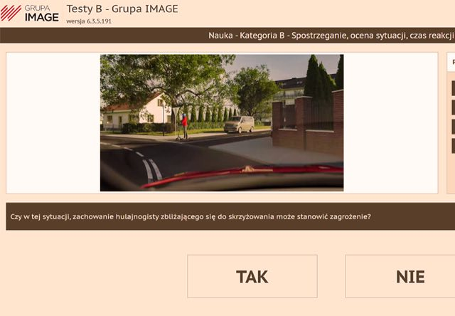
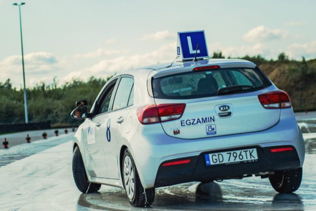

Egzamin teoretyczny w Gdańsku – nowe pytania (2026)
Egzamin teoretyczny w Gdańsku (2026). Czy nowe pytania o zagrożenia zmieniają szkolenie kandydatów na kierowcę na prawo jazdy kat. B?
Strach ma wielkie oczy. Egzamin państwowy to dla wielu kursantów najbardziej stresujący moment w drodze po prawo jazdy. Czy trasy na Oruni, Chełmie czy Siedlcach są naprawdę takie straszne? W OSK Tailor wierzymy, że kluczem nie jest szczęście, ale przygotowanie skrojone na miarę.
3 wpisy, od najnowszego

Egzamin teoretyczny w Gdańsku (2026). Czy nowe pytania o zagrożenia zmieniają szkolenie kandydatów na kierowcę na prawo jazdy kat. B?

Sprawdź, jak zachowywać się na egzaminie praktycznym na prawo jazdy kat. B w PORD Gdańsk. Porady instruktora, stres, błędy i zasady zdawania.

Poznaj 8 kluczowych kryteriów wyboru OSK. Sprawdź, jak wybrać najlepszą szkołę jazdy i na co zwrócić uwagę, aby zdawać egzamin na prawo jazdy.
Egzamin w gdańskim ośrodku sprawdza Twoją koncentrację i to, jak radzisz sobie w dynamicznym ruchu miejskim.
Słynny „łuk” i ruszanie ze wzniesienia. Tutaj liczy się precyzja i opanowanie nerwów.
Specyficzne skrzyżowania, torowiska i zmienne ograniczenia prędkości, które wymagają czujności.
Wyjazd w stronę centrum lub na trasy wylotowe, gdzie musisz wykazać się płynnością jazdy.
Nie rzucamy Cię na głęboką wodę bez koła ratunkowego. Szkolenie układamy tak, żeby egzamin wyglądał jak kolejna lekcja z instruktorem.
Jeździmy tam, gdzie najczęściej zaglądają egzaminatorzy. Ani znak „Stop”, ani trudny lewoskręt Cię nie zaskoczą.
Uczymy, jak radzić sobie z presją, żeby noga na sprzęgle nie drżała w najmniej odpowiednim momencie.
Wyjaśniamy nie tylko jak jechać, ale i dlaczego. Dzięki temu rozumiesz zasady gdańskiego ruchu drogowego w praktyce.
Egzaminator to też człowiek, a egzamin to tylko potwierdzenie Twoich umiejętności.
Zapisz się na kurs albo jazdy doszkalające w OSK Tailor i ruszaj na ul. Równą z pełną pewnością siebie.